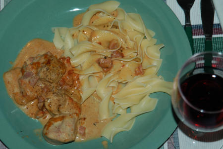

| Zutaten für 4 Personen: | |
| 1 | Schweinsfilet |
| Senf | |
| 100 g | Speckwürfeli |
| 100 g | Butter oder Bratfett |
| 2,5 dl | Rahm |
| 1 kl Dose | Tomatenpurée |
| 1 dl | Portwein |
| Thymian, Rosmarin, Currypulver, Salz, Pfeffer | |
| Sbrinz | |
Das Filet in 2-3 cm dicke Stücke schneiden.
Den Backofen auf 200°C vorheizen.
Die Filetteile gut mit Senf einreiben.
Speckwürfel in Butter rasch anbraten und über das Fleisch verteilen.
Den Rahm nicht ganz steif schlagen, Tomatenpürée und Portwein beigeben, würzen.
Sauce über das Fleisch giessen.
Sbrinz darüber streuen und im vorgeheizten Backofen während etwa 15-20 Minuten überbacken.
Herbert Eigenmann, Code: SWF
Schmeckte am 9.1.2004 ganz ordentlich. Die Backzeit war mit 10 Minuten angegeben was zu wenig war. Deshalb habe ich das hier auf 15-20 Minuten erhöht. Am 18.2.2004 machte ich das nochmals. Da ich das Fleisch zu lange im Ofen liess wurde es etwas trocken.
@LINKBACK_TAG@ @WAKELOCK@